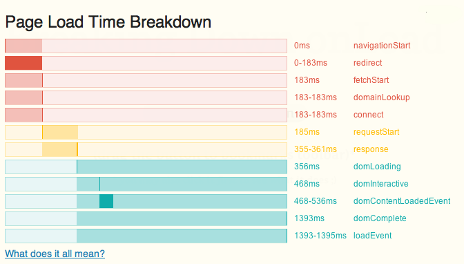

Breaking Down onLoad
drag the button to bookmarks toolbar
↓
click it on any page you want to check
you may also click it first here to see what it does
This script uses Navigation Timing object to present timing of different phases of loading the page by a browser.
It measures everything from triggering the action (hitting enter on url bar, refreshing page or clicking a link/button) to the moment when site is fully loaded. Adding it to your bookmarks allows you to analyze performance of every request you'd like to check out.

So far Navigation Timing API works in Firefox 7+, Chrome (buggy in 15*) and IE 9+
* <tech blah>According to W3C spec window.performance should be implemented as WebIDL [Replaceable] attribute.</tech blah>
In human language it means that its properties are in fact not its own but its prototype.
So you can access the values with plain performance.timing but
using Object methods will not have the result you might expect. In Chrome however performance behaves like a 'normal' object:
performance.timing
// connectEnd: 1321394207437
// connectStart: 1321394207437
// domComplete: 1321394207768
// ...
// redirectEnd: 0
// redirectStart: 0
// ...
performance.hasOwnProperty("timing");
// should be false but true in Chrome
Object.getPrototypeOf(performance).hasOwnProperty("timing");
// should be true but false in Chrome
Object.keys(performance);
// should be [] but is ["memory", "timing", "navigation"] in Chrome
Object.keys(Object.getPrototypeOf(performance));
// should be ["timing", "navigation"] but is [] in Chrome
More resources: